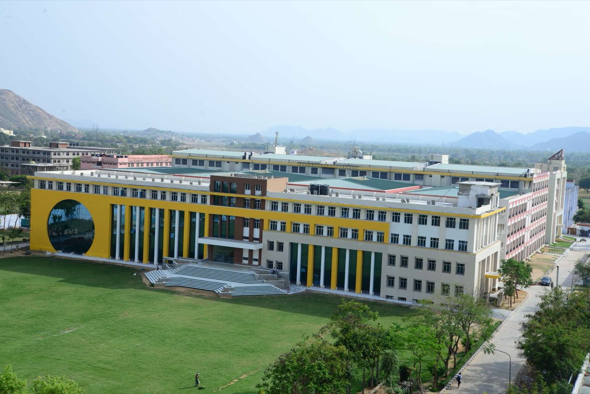
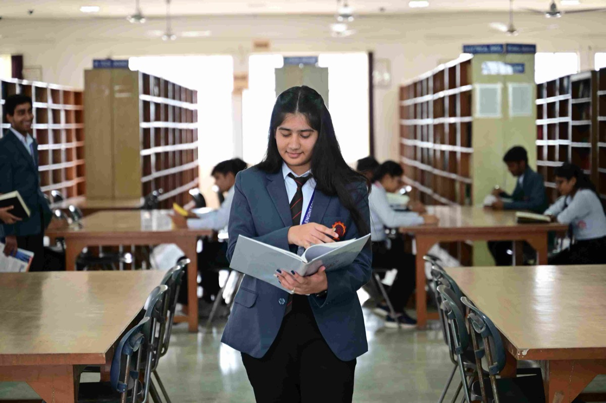
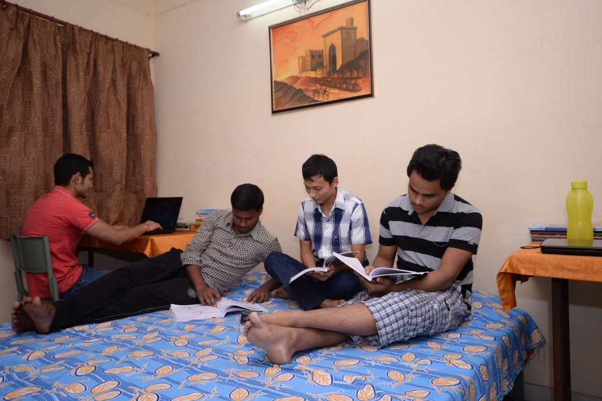
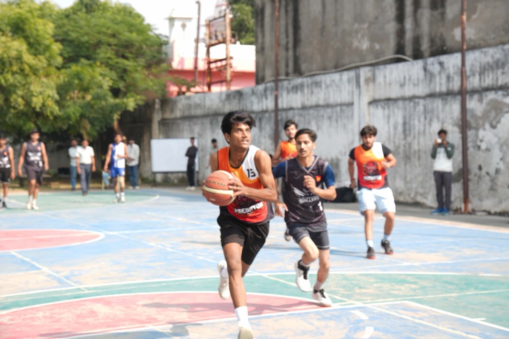

About the college
Jaipur Engineering College (JEC) is a private engineering college in Kukas, on the Jaipur–Delhi road in Rajasthan. Most people simply call it JEC Kukas.
History
The college was set up in 2000. It is approved by the All India Council for Technical Education (AICTE) and affiliated to Rajasthan Technical University (RTU), Kota. It belongs to the AIATERF and JEC Group of institutions.
Four years of B.Tech, in order
- First year: Common subjects such as maths, physics and programming.
- Second year: Core subjects of your own branch begin.
- Third year: Electives, lab work and a summer internship.
- Fourth year: Final project and campus placements.
Quick facts
A table can also read sideways: here every row has its own header cell.
| Full name | Jaipur Engineering College |
|---|---|
| Founded | 2000 |
| Type | Private |
| Approved by | All India Council for Technical Education (AICTE) |
| Affiliated to | Rajasthan Technical University (RTU), Kota |
| Principal | Prof. (Dr.) Bharat Bhushan Jain |
| Location | RIICO Industrial Area, Delhi Road, Kukas, Jaipur |
| Official website | www.jeckukas.org.in |
Campus and facilities
The campus has academic buildings, laboratories, a library, hostels, a mess and sports grounds.

Library
The library has open bookshelves and long reading tables where students can study between classes.

Hostels
Students who come from outside Jaipur can stay in the college hostels and eat in the mess.

Sports
The campus has grounds and courts for outdoor games.

All facilities
- Library
- Department laboratories and a Centre of Excellence
- Research cell
- Training and placement cell
- Hostels and mess
- Sports grounds
Student life
Students take part in clubs, college fests, engineering projects and sports through the year.
Clubs
- Coding and robotics clubs
- Literary and debate club
- Music, dance and drama groups
Next step
Want to study here? See the courses on offer, then fill in the admission form.